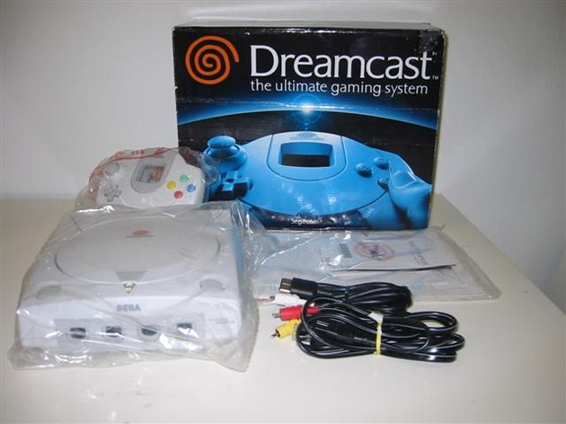

<
Es la primera videoconsola de sexta generación, última anterior a
los 2000 y también última plataforma de Sega, pensada para recuperar el mercado perdido ante PlayStation de Sony. Pero se detuvo su
producción debido a las perdidas económicas de muchos de sus proyectos.
Sus principales características son el lector óptico GD-ROM y su
procesador Hitachi, siendo el sistema el primero en proveer un modem
para jugar online. Los Juegos más relevantes que conoció fueron
Soul Calibur, Sonic Adventure, Power Stone y Hydro Thunder.
>
